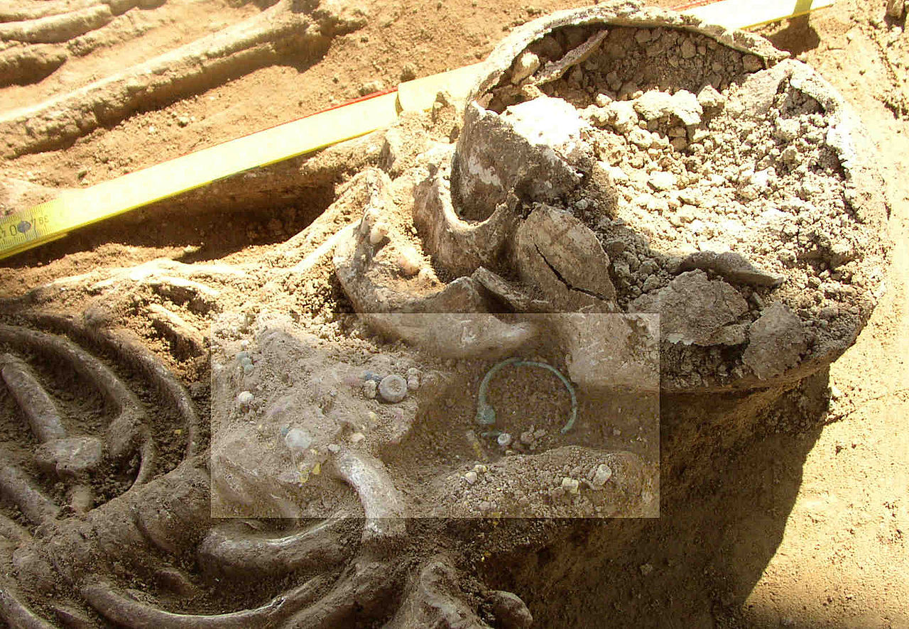
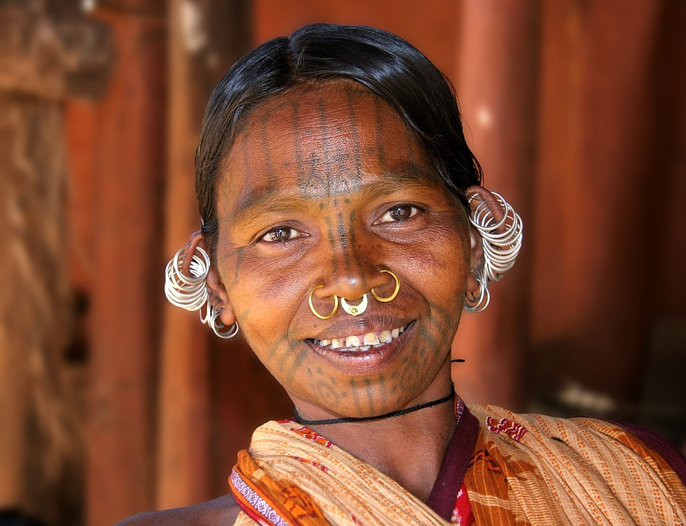
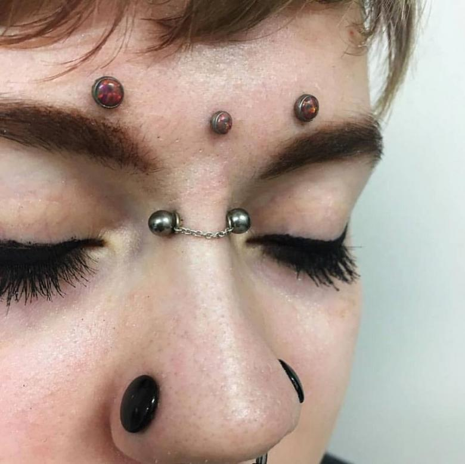
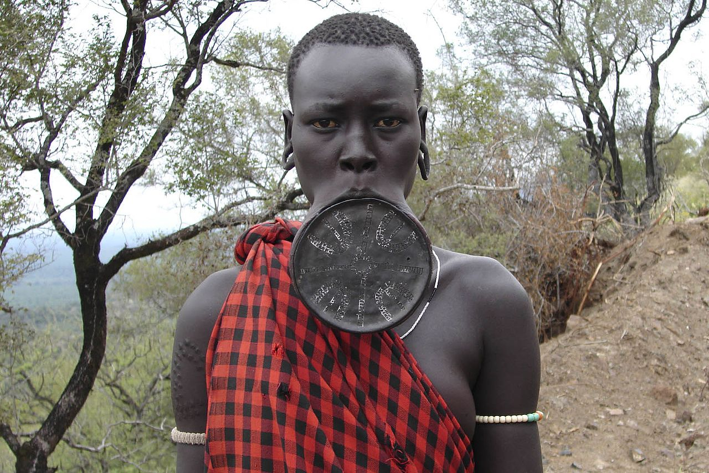

История
В связи с небольшим количеством исторических источников, археологи относительно недавно всерьёз занялись изучением практик украшения тела. В ранних записях содержится мало информации о причинах и способах прокалывания. При изучении захоронений археологи обнаруживают достаточное количество украшений, однако из-за разрушений плоти трудно распознать, как именно украшение фиксировалось на теле. Помимо этого, современные упоминания о пирсинге пропитаны мифами, распространенными подвижником пирсинга Дугом Маллоем. В 1960-х — 70-х годах Маллой рекламировал пирсинг, подавая его как историческую традицию. Его статья Сводка о пирсинге тела и гениталий включала в себя ряд распространённых городских легенд, например, мифы о том что Принц Альберт изобрёл одноименный вид пирсинга, чтобы скрыть размеры своего большого пениса под одеждой, а римские центурионы прикрепляли свои плащи к кольцам в сосках (соски кованые на анатомической кирасе). Некоторые из представленных Маллоем мифов были перепечатаны как факты и впоследствии представлены как часть истории развития пирсинга.
Серьги
На северо-западе тихоокеанского побережья, у племени тлинкитов проколы ушей считались признаком благородства и благополучия, поскольку проколы приобретались на дорогостоящих потлачах. Проколы ушей также были распространены в Египте, во времена XVIII династии (1550—1292 до н. э.), в качестве украшений чаще всего использовались золотые висячие кольца. Золотые серьги в форме аспидов, украшенные драгоценными камнями, считались признаком принадлежности к аристократии. Древние греки носили серьги-подвески, выполненные в форме священных птиц или полубогов, в то время как у римлян было распространено ношение серёг из драгоценных камней.
В Европе проколы ушей вышли из моды между IV и XVI веками в связи с появлением тенденции делать причёски и выбирать одежду, скрывающую уши. Позднее пирсинг ушей вернулся в моду в Италии, Испании, Англии и Франции, а также распространился в Северную Америку до 1930 годов, когда были изобретены ушные клипсы, которые вновь несколько снизили популярность ушных проколов. Согласно Анатомии Унижений Филиппа Стаббса, в XVI веке серьги чаще носили мужчины, чем женщины. В 1577 Рафаэль Холиншед пишет о популярности практики среди «страстных придворных мужей» и «ценителей мужества». Зародившаяся в Испании практика прокалывания ушей среди европейских мужчин распространилась на двор короля Франции Генриха III, и затем в Англию Елизаветинской эры, где серьгу в ухе носили такие именитые особы как Роберт Карр граф Сомерсет, Уильям Шекспир, Уолтер Рэли и король Англии Карл I. Простые люди также носили серьги. Со времён Средневековья в Европе бытовало суеверие о том, что прокол одного уха улучшает зрение, что привело к распространению практики среди моряков и путешественников. Моряки традиционно прокалывали ухо, веря, что, если их погибшее тело вынесёт на берег, серьгу используют, чтобы оплатить им похороны по христианской традиции.
Пирсинг носа
У проколов носа также есть глубоко идущие исторические корни. Запись в Ведах, датированная 1500 г. до н. э., относит проколы носа к богине Лакшми, однако считается, что современная практика пирсинга в Индии распространилась через кочевые племена среднего Востока по пути империи Великих Моголов в XVI веке. В аюрведической медицине ноздри ассоциируются с репродуктивными органами женщины, в связи с чем среди половозрелых индусок в Индии до сих пор распространенно ношение украшений в носу, обычно в левой ноздре. Иногда такие проколы делаются в ночь перед тем, как женщина выходит замуж.
Проколы носа были популярны у бедуинов на Среднем Восктое, а также у берберов, африканского народа беджа и австралийских аборигенов. У многих коренных племен Америки и Аляски было распространено прокалывание перегородки носа (септума). У ацтеков, майя и племён Новой Гвинеи было принято использовать в качестве украшений для проколов носа кости и перья, которые символизировали здоровье и (для мужчин) мужественность. Практика прокалывания носа дала название племени не-персе, однако на деле прокалывание носа в этом племени было не слишком распространено. Ацтеки, Майя и Инки прокалывали перегородку носа и носили в проколах золотые кольца, эта практика сохранилась и по сей день у панамского народа куна. Проколы носа также остаются популярными в Пакистане, республике Бангладеш и практикуются в ряде арабских и ближневосточных стран.
Пирсинг губ и языка
Проколы и тоннели в губах пришли из Африканских и Аеменныхмериканских культур. Украшения в губах носили тлинкиты, а также люди Папуа — Новой Гвинеи и Амазонии. Ацтеки и майя также носили украшения в губах, а догоны с Мали и эфиопские нубийцы использовали для этой цели кольца. Практика растягивания тоннелей в губах при помощи тарелочек и пробок была обнаружена в доколумбовых цивилизациях Центральной Америки и Южной Африки, а также среди некоторых племен Тихоокеанского Северо-запада. В некоторых регионах Малави у женщин принято украшать губы специальными пластинами, которые называются «пелеле». Для установки этих украшений, в детстве женщинам делают прокол в губе, который, после постоянного растягивания, может достигать около 10 сантиметров в диаметре, что в некоторых случаях приводит к изменениям формы челюсти. Подобная практика существует, в некоторых племенах, и по сей день. Женщины эфиопского племени мурси носят губные пластины, которые достигают 15 сантиметров в диаметре.
В некоторых доколумбовых и североамериканских культурах украшения в губе указывают на статус носителя. Издревле они символизировали высокий статус у женщин народа хайда, однако, практика исчезла под влиянием западной культуры.
Ольмеки, ацтеки и майя практиковали пирсинг языка в ритуальных целях. Наскальная живопись майя изображает ритуалы, в ходе которых наиболее высокопоставленные члены племени прокалывали языки колючками. При этом кровь собиралась в кору дерева, которая, впоследствии, сжигалась в честь богов майя. Народ хайда, племена кавакиутл и тлинкиты также практиковали прокалывание языка, помимо этого, практика была распространена на востоке среди суфиев и факиров.
Пирсинг пупка, сосков и гениталий
История проколов сосков, пупка и гениталий была сильно искажена из-за распространения статьи Дуга Маллоя «Сводка о пирсинге тела и гениталий», содержавшей большое количество заблуждений и мифов о пирсинге. Так, например, коллега Маллоя Джим Вард утверждал, что история пирсинга пупка уходит корнями в Древней Египет, где проколы пупка были распространены среди аристократии, что отображено в скульптурах. Это утверждение впоследствии неоднократно повторялось. Другие источники утверждают, что свидетельства о прокалывании пупков в историческом прошлом отсутствуют. Пирсинг пупка среди звёзд имеется у: Бритни Спирс, Линдси Лохан, Виктории Бекхэм, Джастина Бибера, имелся также и у уже покойной Анны Николь Смит и у многих других.
Однако сохранились свидетельства о распространении практики прокалывания сосков и гениталий в различных культурах до XX века. Камасутра времен империи Гупта описывает практику введения в крайнюю плоть пениса спиц и других объектов для усилений сексуальных переживаний. Представители народа Даяки с Борнео прокалывали головку пениса осколками костей с противоположной целью — для снижения сексуальной активности. Проколы сосков служили символом мужества среди римских солдат. Практика прокалывания сосков также была распространена среди американских и британских моряков в качестве обряда во время плавания при пересечении важных параллелей и меридианов. Западные женщины XIV века прокалывали и красили соски, которые, благодаря модным в то время платьям с особенно низким вырезом зачастую оставались открытыми для стороннего взгляда. Существуют свидетельства того, что мода на ношение колечек в сосках, которые также назывались «грудными кольцами», снова получила распространение среди западных женщин в 1980-х годах. Женщины носили колечки в одном или обоих сосках. Если подобная практика и была в моде, то в течение непродолжительного времени.
Рост популярности пирсинга на Западе
В начале XX века пирсинг утратил популярность на Западе. После Второй мировой войны пирсинг снова начал завоёвывать популярность, в первую очередь среди представителей гей-субкультуры. В этот период даже проколы ушей считались социально неприемлемыми для женщин, однако, этот относительно приемлемый вид пирсинга снова начал набирать популярность с 1960-х годов. В 1970-х распространение пирсинга усилилось в связи с возникновением панк-движения, члены которого отдавали предпочтение нетрадиционным украшениям, таким как английские булавки, а Факир Мусафар начал популяризовать пирсинг как форму современного примитивизма. Современный примитивизм предполагал заимствование различных типов модификаций из других культур, например, практику растягивания тоннелей.
Пирсинг был активно популяризован в Соединённых Штатах, группой калифорнийцев в числе которых были Маллой и Джим Вард, «отец основатель современного пирсинга». В 1975 году Вард открыл надомный салон пирсинга в Уэст-Голливуде, что привело к открытию в 1978 году «первой профессиональной студии специализирующейся на пирсинге» компанией Гаутлет Итерпрайс. После этого Вард оформил и выпустил брошюру написанную Маллоем. Брошюра содержала большое количество дезинформации, но при этом стимулировала дополнительный интерес к более экзотическим видам пирсинга. Вместе с ростом массового интереса к пирсингу Вард Маллой и Мусафар объединились для создания первого издания посвященного теме — PFIQ (Ежеквартальный Международный Журнал Фанатов Пирсинга).
Существенное продвижение пирсинга тела в Англии произошло в 1987 году когда в ходе масштабной операции была арестована группа гомосексуалистов, в которую входил известный мастер по пирсингу Алан Оверсби. Они были обвинены в добровольном садомазохистском поведении, которое продолжалось более 10 лет и включало в себя прокалывание тела. Суд постановил, что декоративный пирсинг нельзя считать нелегальным, однако интимные проколы были поставлены вне закона. Впоследствии, в 1992 году была сформирована группа протеста против вынесенного решения. Группа протестующих подала апелляцию в Королевский судный двор, затем в палату лордов и затем в Европейский суд по правам человека, в попытках опротестовать обвинения как беспочвенные, попытка прошла безуспешно. Несмотря на то что их последующие попытки опротестовать обвинение также окончились провалом, в 1993 газета The Times интерпретировала решение суда как «нонсенс нетерпимости».
В 1993 прокалывание пупка было продемонстрировано на церемонии MTV Video Music Awards в категории «видео года» в клипе группы Aerosmith на песню «Cryin’» что привело к высокой активности молодых девушек-фанаток желавших подражать показанному образу. Согласно Библии пирсинга вышедшей в 2009 г. это видео стало «той путеводной звездой, которая вдохновила формирование полноценной индустрии услуг по пирсингу». Культура прокалывания тела получила дополнительный медийный толчок когда в 2004, во время полуфинала Супербоул XXXVIII, певица Джанет Джексон оголила левую грудь продемонстрировав прокол соска. Некоторые профессиональные мастера по пирсингу сообщали о резком росте востребованности бизнеса в связи с широким освещением события в прессе.
В 2005 анкетирование 10 503 жителей Англии в возрасте от 16 лет показало, что примерно 10 % опрошенных имели проколы отличные от проколов мочки уха. Среди носителей пирсинга был большой процент женщин в возрасте 16-24 лет (46.2 % обладателей пирсинга по данным опросам). Среди наиболее прокалываемых частей тела первое место занимает пупок — 33 % опрошенных, следующие по популярности — пирсинг носа и ушей с 19 % и 13 % соответственно. Проколы языка и соска зарегистрированы у 9 % опрошенных. Прокол брови, губы и гениталий был у 8 %, 4 % и 2 % соответственно. Согласно опросу, среди женщин наибольшей популярностью пользовались проколы брови и соска. Среди мужской аудитории разброс популярности мест прокалывания оказался шире, зарегистрированы проколы соска, брови, уха, языка, носа, губ и гениталий.
Влияние на здоровье
Пирсинг является инвазивной процедурой, которой сопутствует определённый риск. Английское исследование, проведённое в 2005 году на группе из 10 503 человек старше 16 лет, выявило осложнения пирсинга в 31 % случаев; 15 % потребовалась профессиональная медицинская помощь; в 0,9 % случаев осложнения были настолько серьёзными, что потребовалась госпитализация.
Возможные осложнения включают:
- аллергические реакции на металл украшений, особенно никель, содержащийся в хирургической стали. Риск можно минимизировать, если использовать украшения высокого качества из сплава титана марки G23, чистого титана, PTFE, биоапласта или ниобия;
- бактериальные и вирусные инфекции, особенно вызванные золотистым стафилококком, стрептококками группы А и псевдомонадами. Некоторые исследования сообщают о более высоком риске развития кандидоза ротовой полости после пирсинга языка у молодых людей;
- чрезмерное рубцевание, включая гипертрофические и келоидные рубцы. Рубцовая ткань или отверстие остаются даже после удаления украшений;
- физическая травма места пирсинга, включая разрывы (например, разрыв мочки уха зацепившейся за что-то серьгой), трение, сдавление, что может вызывать отёк и ухудшать заживление; у женщин — реже: мужчины склонны к более травматическому поведению. Риск можно уменьшить, если тщательно подобрать размер украшений и не трогать их без необходимости в процессе заживления;
- отторжение (выдавливание) украшения возникает в результате недостаточной глубины прокола, когда кожа начинает нарастать под украшением, постепенно выдавливая его наружу. Часто встречается при проколах пупка;
- травма зубов и ротовой полости, включая рецессию десны, повышенное истирание зубов их сколы и обламывание. Рецессия дёсен встречается у 19-68 % людей с оральным пирсингом. Оральный пирсинг является основной причиной трещин и сколов зубов вследствие травм, возникающих при контакте с зубами.